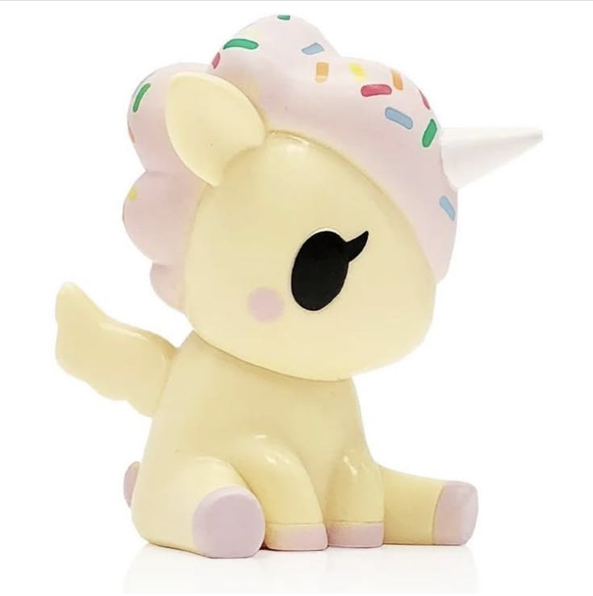

Naam: Cara Deblieck
Adres: Unicornstraat 1 7777 Suikerspinstad
Telefoonnummer: 0477 77 77 77
E-mailadres: unicorn@sprinkle.com
Zo zie ik er uit:

Favoriete artiesten: The Neighbourhood, ADÉLA en Artemas

Comfort film: The Truman Show

Favoriet wezen: Unicorn

| Voornaam | Familienaam | Bijnaam | Verjaardag | Hobby's | Favoriet dier |
|---|---|---|---|---|---|
| Rachel | Sweets | Candy | 1 september | Rolschaatsen, schrijven | Kat |
| Sienna | Polly | Lolly | 20 juli | Lezen | Vlinder |
| Jack | Mulder | Chip | 28 oktober | Gamen | Schildpad |
| Dana | Holmes | Sprinkle | 18 december | Koken, bakken | Hond |
| Nala | Queen | Nala | 6 juni | Muziek luisteren | Kwal, dolfijn |